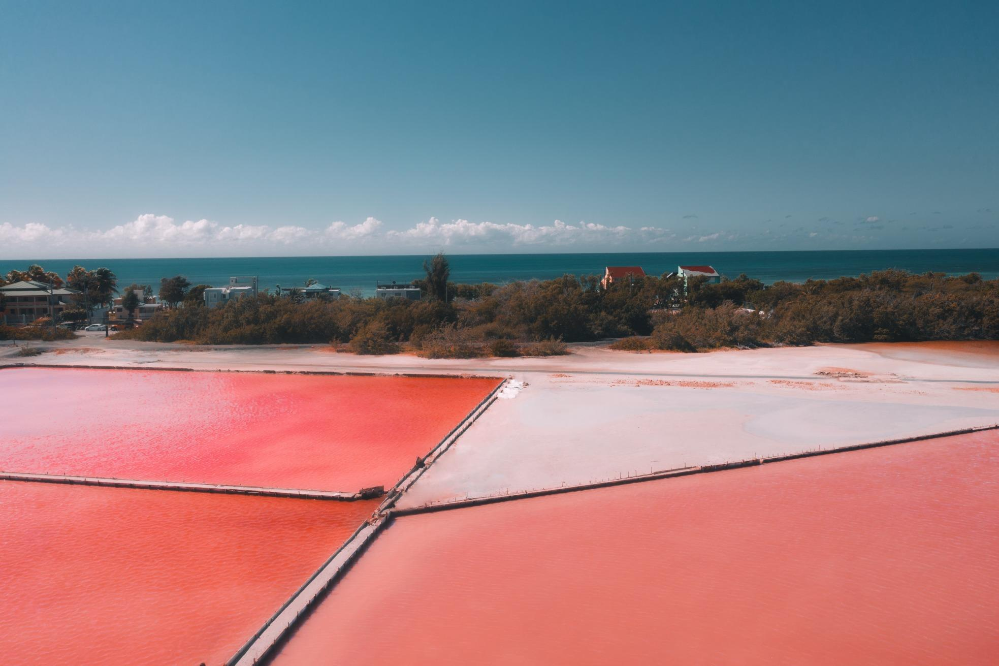

Old San Juan, the historic heart of Puerto Rico, offers visitors a unique blend of Spanish colonial architecture, rich cultural heritage, and lively Caribbean atmosphere. As you wander through its cobblestone streets, you’ll be surrounded by brightly colored buildings adorned with wrought-iron balconies, evoking the charm of centuries past. Founded in 1521, this area is one of the oldest European settlements in the Americas and showcases the legacy of its storied past.
A must-visit in Old San Juan is El Morro, a majestic fortress overlooking the Atlantic Ocean. This UNESCO World Heritage Site, along with its neighboring fort, Castillo San Cristóbal, played a key role in the island's defense for hundreds of years. Touring these forts provides a fascinating glimpse into Puerto Rico’s strategic significance and military history, complete with stunning ocean views that stretch to the horizon.
Beyond its historical sites, Old San Juan is also a cultural and culinary hub. The neighborhood is home to lively plazas, artisan shops, and cozy cafes where you can savor Puerto Rican specialties like mofongo and alcapurrias. In the evenings, the district comes alive with music, dancing, and nightlife, offering visitors an authentic taste of the island's vibrant spirit.
Whether you’re interested in history, culture, or simply soaking in the atmosphere, Old San Juan has something for everyone. It’s a place where the past and present blend seamlessly, inviting travelers to explore its timeless beauty and experience the warmth of Puerto Rican hospitality.

El Morro, officially known as Castillo San Felipe del Morro, is a majestic 16th-century fortress perched at the edge of Old San Juan, overlooking the Atlantic Ocean. Originally built by Spanish colonists to guard the entrance to San Juan Bay, it stands today as a UNESCO World Heritage Site and a symbol of Puerto Rico’s rich history. Visitors can explore its towering walls, winding tunnels, and expansive grounds, all while taking in panoramic views of the ocean and city.
This iconic landmark played a crucial role in protecting the island from invasions for centuries. Now, it’s a popular destination for history enthusiasts and sightseers alike, who come to walk through its storied past and enjoy its sweeping vistas. El Morro offers a fascinating glimpse into the island's colonial heritage, blending historical intrigue with natural beauty.

Salinas de Cabo Rojo, located on Puerto Rico's southwestern coast, is a mesmerizing natural area known for its striking pink salt flats. The vibrant hue of the water comes from microscopic organisms that thrive in the salty environment, creating a one-of-a-kind landscape that feels almost otherworldly. Visitors can explore the salt flats and take in the scenic views, which are particularly stunning during sunset when the pink tones intensify.
This unique ecosystem is not only beautiful but also historically significant. The area has been used for salt production for centuries, and visitors can still see remnants of the old salt mining operations. Nearby, the Cabo Rojo Lighthouse offers a panoramic view of the salt flats and the turquoise Caribbean Sea, making it a perfect spot for photography and nature lovers. Salinas de Cabo Rojo provides a peaceful escape into one of Puerto Rico's most unique natural wonders.